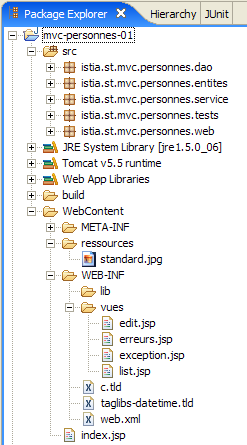
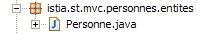
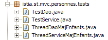
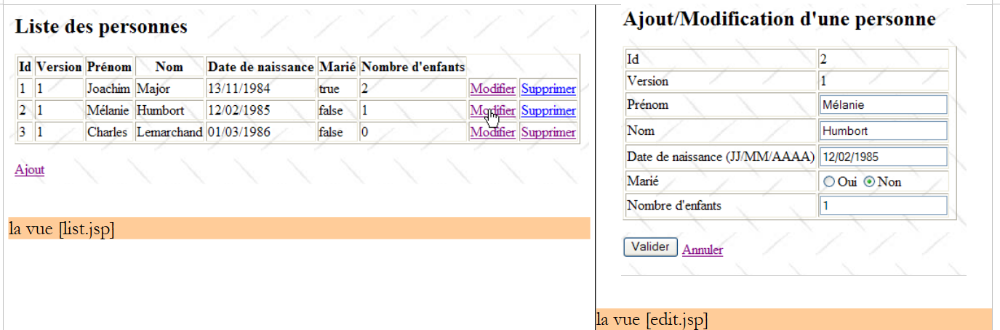
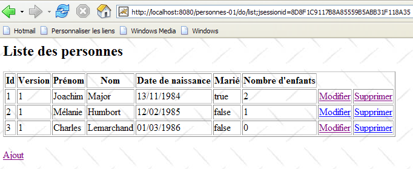
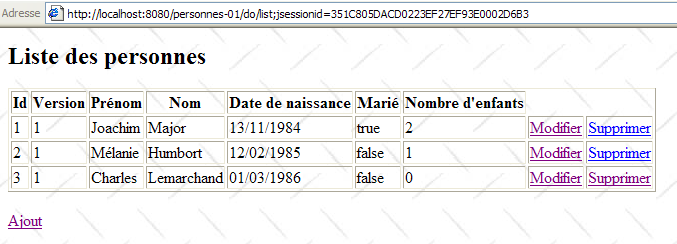
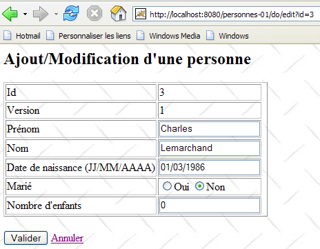
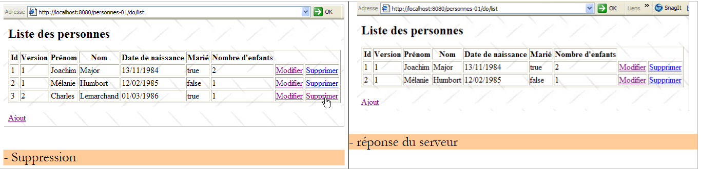
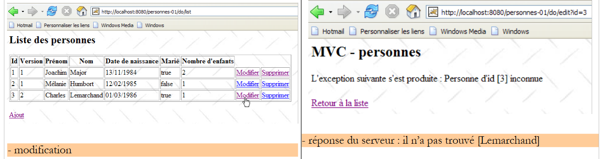

14. Application web MVC dans une architecture 3tier – Exemple 1
14.1. Présentation
Jusqu’à maintenant, nous nous sommes contentés d’exemples à visée pédagogique. Pour cela, ils se devaient d’être simples. Nous présentons maintenant, une application basique mais néanmoins plus riche que toutes celles présentées jusqu’à maintenant. Elle aura la particularité d’utiliser les trois couches d’une architecture 3tier :

Le lecteur est invité à relire les principes d'une application web MVC dans une architecture 3tier s'il les a oubliés, au paragraphe 4.
L’application web que nous allons écrire va permettre de gérer un groupe de personnes avec quatre opérations :
- liste des personnes du groupe
- ajout d’une personne au groupe
- modification d’une personne du groupe
- suppression d’une personne du groupe
On reconnaîtra les quatre opérations de base sur une table de base de données. Nous écrirons deux versions de cette application :
- dans la version 1, la couche [dao] n’utilisera pas de base de données. Les personnes du groupe seront stockées dans un simple objet [ArrayList] géré en interne par la couche [dao]. Cela permettra au lecteur de tester l’application sans contrainte de base de données.
- dans la version 2, nous placerons le groupe de personnes dans une table de base de données. Nous montrerons que cela se fera sans impact sur la couche web de la version 1 qui restera inchangée.
Les copies d’écran qui suivent montrent les pages que l’application échange avec l’utilisateur.


 |
 |
14.2. Le projet Eclipse
Le projet de l’application s’appelle [personnes-01] :

Ce projet recouvre les trois couches de l’architecture 3tier de l’application :
 |
- la couche [dao] est contenue dans le paquetage [istia.st.mvc.personnes.dao]
- la couche [metier] ou [service] est contenue dans le paquetage [istia.st.mvc.personnes.service]
- la couche [web] ou [ui] est contenue dans le paquetage [istia.st.mvc.personnes.web]
- le paquetage [istia.st.mvc.personnes.entites] contient les objets partagés entre différentes couches
- le paquetage [istia.st.mvc.personnes.tests] contient les tests Junit des couches [dao] et [service]
Nous allons explorer successivement les trois couches [dao], [service] et [web]. Parce que ce serait trop long à écrire et peut-être trop ennuyeux à lire, nous serons peut-être parfois un peu rapides sur les explications sauf lorsque ce qui est présenté est nouveau.
14.3. La représentation d’une personne
L’application gère un groupe de personnes. Les copies d’écran paragraphe 14.1 ont montré certaines des caractéristiques d’une personne. Formellement, celles-ci sont représentées par une classe [Personne] :

La classe [Personne] est la suivante :
- une personne est identifiée par les informations suivantes :
- id : un n° identifiant de façon unique une personne
- nom : le nom de la personne
- prenom : son prenom
- dateNaissance : sa date de naissance
- marie : son état marié ou non
- nbEnfants : son nombre d’enfants
- l’attribut [version] est un attribut artificiellement ajouté pour les besoins de l’application. D’un point de vue objet, il aurait été sans doute préférable d’ajouter cet attribut dans une classe dérivée de [Personne]. Son besoin apparaît lorsqu’on fait des cas d’usage de l’application web. L’un d’entre-eux est le suivant :
Au temps T1, un utilisateur U1 entre en modification d’une personne P. A ce moment, le nombre d’enfants est 0. Il passe ce nombre à 1 mais avant qu’il ne valide sa modification, un utilisateur U2 entre en modification de la même personne P. Puisque U1 n’a pas encore validé sa modification, U2 voit le nombre d’enfants à 0. U2 passe le nom de la personne P en majuscules. Puis U1 et U2 valident leurs modifications dans cet ordre. C’est la modification de U2 qui va gagner : le nom va passer en majuscules et le nombre d’enfants va rester à zéro alors même que U1 croit l’avoir changé en 1.
La notion de version de personne nous aide à résoudre ce problème. On reprend le même cas d’usage :
Au temps T1, un utilisateur U1 entre en modification d’une personne P. A ce moment, le nombre d’enfants est 0 et la version V1. Il passe le nombre d’enfants à 1 mais avant qu’il ne valide sa modification, un utilisateur U2 entre en modification de la même personne P. Puisque U1 n’a pas encore validé sa modification, U2 voit le nombre d’enfants à 0 et la version à V1. U2 passe le nom de la personne P en majuscules. Puis U1 et U2 valident leurs modifications dans cet ordre. Avant de valider une modification, on vérifie que celui qui modifie une personne P détient la même version que la personne P actuellement enregistrée. Ce sera le cas de l’utilisateur U1. Sa modification est donc acceptée et on change alors la version de la personne modifiée de V1 à V2 pour noter le fait que la personne a subi un changement. Lors de la validation de la modification de U2, on va s’apercevoir qu’il détient une version V1 de la personne P, alors qu’actuellement la version de celle-ci est V2. On va alors pouvoir dire à l’utilisateur U2 que quelqu’un est passé avant lui et qu’il doit repartir de la nouvelle version de la personne P. Il le fera, récupèrera une personne P de version V2 qui a maintenant un enfant, passera le nom en majuscules, validera. Sa modification sera acceptée si la personne P enregistrée a toujours la version V2. Au final, les modifications faites par U1 et U2 seront prises en compte alors que dans le cas d’usage sans version, l’une des modifications était perdue.
- lignes 32-40 : un constructeur capable d’initialiser les champs d’une personne. On omet le champ [version].
- lignes 43-51 : un constructeur qui crée une copie de la personne qu’on lui passe en paramètre. On a alors deux objets de contenu identique mais référencés par deux pointeurs différents.
- ligne 55 : la méthode [toString] est redéfinie pour rendre une chaîne de caractères représentant l’état de la personne
14.4. La couche [dao]
La couche [dao] est constituée des classes et interfaces suivantes :

- [IDao] est l’interface présentée par la couche [dao]
- [DaoImpl] est une implémentation de celle-ci où le groupe de personnes est encapsulé dans un objet [ArrayList]
- [DaoException] est un type d’exceptions non contrôlées (unchecked), lancées par la couche [dao]
L’interface [IDao] est la suivante :
- l’interface a quatre méthodes pour les quatre opérations que l’on souhaite faire sur le groupe de personnes :
- getAll : pour obtenir une collection de personnes
- getOne : pour obtenir une personne ayant un id précis
- saveOne : pour ajouter une personne (id=-1) ou modifier une personne existante (id <> -1)
- deleteOne : pour supprimer une personne ayant un id précis
La couche [dao] est susceptible de lancer des exceptions. Celles-ci seront de type [DaoException] :
- ligne 3 : la classe [DaoException] dérivant de [RuntimeException] est un type d’exception non contrôlée : le compilateur ne nous oblige pas à :
- gérer ce type d’exceptions avec un try / catch lorsqu’on appelle une méthode pouvant la lancer
- mettre le marqueur " throws DaoException " dans la signature d’une méthode susceptible de lancer l’exception
Cette technique nous évite d’avoir à signer les méthodes de l’interface [IDao] avec des exceptions d’un type particulier. Toute implémentation lançant des exceptions non contrôlées sera alors acceptable amenant ainsi de la souplesse dans l’architecture.
- ligne 6 : un code d’erreur. La couche [dao] lancera diverses exceptions qui seront identifiées par des codes d’erreur différents. Cela permettra à la couche qui décidera de gérer l’exception de connaître l’origine exacte de l’erreur et de prendre ainsi les mesures appropriées. Il y a d’autres façons d’arriver au même résultat. L’une d’elles est de créer un type d’exception pour chaque type d’erreur possible, par exemple NomManquantException, PrenomManquantException, AgeIncorrectException, ...
- lignes 13-16 : le constructeur qui permettra de créer une exception identifiée par un code d’erreur ainsi qu’un message d’erreur.
- lignes 8-10 : la méthode qui permettra au code de gestion d’une exception d’en récupérer le code d’erreur.
La classe [DaoImpl] implémente l’interface [IDao] :
1 2 3 4 5 6 7 8 9 10 11 12 13 14 15 16 17 18 19 20 21 22 23 24 25 26 27 28 29 30 31 32 33 34 35 36 37 38 39 40 41 42 43 44 45 46 47 48 49 50 51 52 53 54 55 56 57 58 59 60 61 62 63 64 65 66 67 68 69 70 71 72 73 74 75 76 77 78 79 80 81 82 83 84 85 86 87 88 89 90 91 92 93 94 95 96 97 98 99 100 101 102 103 104 105 106 107 108 109 110 111 112 113 114 115 116 117 118 119 120 121 122 123 124 125 126 127 128 129 130 131 132 133 134 135 136 137 138 139 140 141 142 143 144 145 146 147 148 149 150 151 152 153 154 155 156 157 158 159 160 161 162 163 164 165 166 167 168 | |
Nous n’allons donner que les grandes lignes de ce code. Nous passerons cependant un peu de temps sur les parties les plus délicates.
- ligne 13 : l’objet [ArrayList] qui va contenir le groupe de personnes
- ligne 16 : l’identifiant de la dernière personne ajoutée. A chaque nouvel ajout, cet identifiant va être incrémenté de 1.
La classe [DaoImpl] va être instanciée en un unique exemplaire. C’est ce qu’on appelle un singleton. Une application web sert ses utilisateurs de façon simultanée. Il y a à un moment donné plusieurs threads exécutés par le serveur web. Ceux-ci se partagent les singletons :
- celui de la couche [dao]
- celui de la couche [service]
- ceux des différents contrôleurs, validateurs de données, ... de la couche web
Si un singleton a des champs privés, il faut tout de suite se demander pourquoi il en a. Sont-ils justifiés ? En effet, ils vont être partagés entre différents threads. S’ils sont en lecture seule, cela ne pose pas de problème s’ils peuvent être initialisés à un moment où on est sûr qu’il n’y a qu’un thread actif. On sait en général trouver ce moment. C’est celui du démarrage de l’application web alors qu’elle n’a pas commencé à servir des clients. S’ils sont en lecture / écriture alors il faut mettre en place une synchronisation d’accès aux champs sinon on court à la catastrophe. Nous illustrerons ce problème lorsque nous testerons la couche [dao].
- la classe [DaoImpl] n’a pas de constructeur. C’est donc son constructeur par défaut qui sera utilisé.
- lignes 19-38 : la méthode [init] sera appelée au moment de l’instanciation du singleton de la couche [dao]. Elle crée une liste de trois personnes.
- lignes 41-43 : implémente la méthode [getAll] de l’interface [IDao]. Elle rend une référence sur la liste des personnes.
- lignes 46-55 : implémente la méthode [getOne] de l’interface [IDao]. Son paramètre est l’id de la personne cherchée.
Pour la récupérer, on fait appel à une méthode privée [getPosition] des lignes 113-126. Cette méthode rend la position dans la liste, de la personne cherchée ou -1 si la personne n’a pas été trouvée.
Si la personne a été trouvée, la méthode [getOne] rend une référence (ligne 51) sur une copie de cette personne et non sur la personne elle-même. En effet, lorsqu’un utilisateur va vouloir modifier une personne, les informations sur celle-ci vont-être demandées à la couche [dao] et remontées jusqu’à la couche [web] pour modification, sous la forme d’une référence sur un objet [Personne]. Cette référence va servir de conteneur de saisies dans le formulaire de modification. Lorsque dans la couche web, l’utilisateur va poster ses modifications, le contenu du conteneur de saisies va être modifié. Si le conteneur est une référence sur la personne réelle du [ArrayList] de la couche [dao], alors celle-ci est modifiée alors même que les modifications n’ont pas été présentées aux couches [service] et [dao]. Cette dernière est la seule habilitée à gérer la liste des personnes. Aussi faut-il que la couche web travaille sur une copie de la personne à modifier. Ici la couche [dao] délivre cette copie.
Si la personne cherchée n’est pas trouvée, une exception de type [DaoException] est lancée avec le code d’erreur 2 (ligne 53).
- lignes 94-104 : implémente la méthode [deleteOne] de l’interface [IDao]. Son paramètre est l’id de la personne à supprimer. Si la personne à supprimer n’existe pas, une exception de type [DaoException] est lancée avec le code d’erreur 2.
- lignes 58-91 : implémente la méthode [saveOne] de l’interface [IDao]. Son paramètre est un objet [Personne]. Si cet objet à un id=-1, alors il s’agit d’un ajout de personne. Sinon, il s’agit de modifier la personne de la liste ayant cet id avec les valeurs du paramètre.
- ligne 60 : la validité du paramètre [Personne] est vérifiée par une méthode privée [check] définie aux lignes 129-155. Cette méthode fait des vérifications basiques sur la valeur des différents champs de [Personne]. A chaque fois qu’une anomalie est détectée, une [DaoException] avec un code d’erreur spécifique est lancé. Comme la méthode [saveOne] ne gère pas cette exception, elle remontera à la méthode appelante.
- lignes 62 : si le paramètre [Personne] a son id égal à -1, alors il s’agit d’un ajout. L’objet [Personne] est ajouté à la liste interne des personnes (ligne 66), avec le 1er id disponible (ligne 64), et un n° de version égal à 1 (ligne 65).
- si le paramètre [Personne] a un [id] différent de -1, il s’agit de modifier la personne de la liste interne ayant cet [id]. Tout d’abord, on vérifie (lignes 70-75) que la personne à modifier existe. Si ce n’est pas le cas, on lance une exception de type [DaoException] avec le code d’erreur 2.
- si la personne est bien présente, on vérifie que sa version actuelle est la même que celle du paramètre [Personne] qui contient les modifications à apporter à l’original. Si ce n’est pas le cas, cela signifie que celui qui veut faire la modification de la personne n’en détient pas la dernière version. On le lui dit en lançant une exception de type [DaoException] avec le code d’erreur 3 (lignes 79-80).
- si tout va bien, les modifications sont faites sur l’original de la personne (lignes 85-90)
On sent bien que cette méthode doit être synchronisée. Par exemple, entre le moment où on vérifie que la personne à modifier est bien là et celui où la modification va être faite, la personne a pu être supprimée de la liste par quelqu’un d’autre. La méthode devrait être donc déclarée [synchronized] afin de s’assurer qu’un seul thread à la fois l’exécute. Il en est de même pour les autres méthodes de l’interface [IDao]. Nous ne le faisons pas, préférant déplacer cette synchronisation dans la couche [service]. Pour mettre en lumière les problèmes de synchronisation, lors des tests de la couche [dao] nous arrêterons l’exécution de [saveOne] pendant 10 ms (ligne 83) entre le moment où on sait qu’on peut faire la modification et le moment où on la fait réellement. Le thread qui exécute [saveOne] perdra alors le processeur au profit d’un autre. Nous augmentons ainsi nos chances de voir apparaître des conflits d’accès à la liste des personnes.
14.5. Tests de la couche [dao]
Un test JUnit est écrit pour la couche [dao] :
 |  |
[TestDao] est le test JUnit. Pour mettre en évidence les problèmes d’accès concurrents à la liste des personnes, des threads de type [ThreadDaoMajEnfants] sont créés. Ils sont chargés d’augmenter de 1 le nombre d’enfants d’une personne donnée.
[TestDao] a cinq tests [test1] à [test5]. Nous ne présentons que deux d’entre-eux, le lecteur étant invité à découvrir les autres dans le code source associé à cet article.
- ligne 9 : référence sur l'implémentation de la couche [dao] testée
- lignes 12-15 : le constructeur du test JUnit. Il crée une instance de type [DaoImpl] de la couche [dao] à tester et l'initialise.
La méthode [test1] teste les quatre méthodes de l’interface [IDao] de la façon suivante :
- ligne 3 : on demande la liste des personnes
- ligne 6 : on affiche celle-ci
[1,1,Joachim,Major,13/01/1984,true,2]
[2,1,Mélanie,Humbort,12/01/1985,false,1]
[3,1,Charles,Lemarchand,01/01/1986,false,0]
Le test ensuite ajoute une personne, la modifie et la supprime. Ainsi les quatre méthodes de l’interface [IDao] sont-elles utilisées.
- lignes 8-10 : on ajoute une nouvelle personne (id=-1).
- ligne 11 : on récupère l’id de la personne ajoutée car l’ajout lui en a donné un. Avant elle n’en avait pas.
- ligne 13-14 : on demande à la couche [dao] une copie de la personne qui vient d’être ajoutée. Il faut se rappeler que si la personne demandée n’est pas trouvée, la couche [dao] lance une exception. On aura alors un plantage ligne 13. On aurait pu gérer ce cas plus proprement. Ligne 14, on vérifie le nom de la personne retrouvée.
- lignes 16-17 : on modifie ce nom et on demande à la couche [dao] d’enregistrer les modifications.
- lignes 19-20 : on demande à la couche [dao] une copie de la personne qui vient d’être ajoutée et on vérifie son nouveau nom.
- ligne 22 : on supprime la personne ajoutée au début du test.
- lignes 23-34 : on demande à la couche [dao] une copie de la personne qui vient d’être supprimée. On doit obtenir une [DaoException] de code 2.
- lignes 36-37 : la liste des personnes est redemandée. On doit obtenir la même qu’au début du test.
La méthode [test4] cherche à mettre en lumière les problèmes d’accès concurrents aux méthodes de la couche [dao]. Rappelons que celles-ci n’ont pas été synchronisées. Le code du test est le suivant :
- lignes 3-6 : on ajoute dans la liste une personne P avec aucun enfant. On note son [id] (ligne 6).
- lignes 7-13 : on lance N threads. Chacun d’eux va incrémenter le nombre d’enfants de la personne P de 1 unité. Au final, la personne P devra avoir N enfants.
- lignes 15-17 : la méthode [test4] qui a lancé les N threads attend qu’ils aient terminé leur travail avant de regarder le nouveau nombre d’enfants de la personne P.
- lignes 18-21 : on récupère la personne P et on vérifie que son nombre d’enfants est N.
- lignes 22-35 : la personne P est supprimée puis on vérifie qu’elle n’existe plus dans la liste.
Ligne 11, on voit que les threads sont de type [ThreadDaoMajEnfants]. Le constructeur de ce type a trois paramètres :
- le nom donné au thread, ceci pour le suivre au moyen de logs
- une référence sur la couche [dao] afin que le thread y ait accès
- l’id de la personne sur laquelle le thread doit travailler
Le type [ThreadDaoMajEnfants] est le suivant :
- ligne 9 : [ThreadDaoMajEnfants] est bien un thread
- lignes 18-22 : le constructeur qui initialise le thread avec trois informations
- le nom [name] donné au thread
- une référence [dao] sur la couche [dao]. On notera qu’une nouvelle fois, nous travaillons avec le type de l’interface [IDao] et non celui de l’implémentation [DaoImpl].
- l’identifiant [id] de la personne sur laquelle le thread doit travailler
Lorsque [test4] lance un thread [ThreadDaoMajEnfants] (ligne 12 de test4), la méthode [run] (ligne 25) de celui-ci est exécutée :
- lignes 78-81 : la méthode privée [suivi] permet de faire des logs écran. La méthode [run] en use pour permettre le suivi du thread dans son exécution.
- le thread va chercher à incrémenter de 1 le nombre d’enfants de la personne P d’identifiant [id]. Cette mise à jour peut nécessiter plusieurs tentatives. Prenons deux threads [TH1] et [TH2]. [TH1] demande une copie de la personne P à la couche [dao]. Il l’obtient et constate qu’elle a la version V1. [TH1] est interrompu. [TH2] qui le suivait fait la même chose et obtient la même version V1 de la personne P. [TH2] est interrompu. [TH2] reprend la main, incrémente le nombre d’enfants de P et sauvegarde ses modifications. Nous savons qu’alors, celles-ci sont sauvegardées et que la version de P va passer à V2. [TH1] a fini son travail. [TH2] reprend la main et fait de même. Sa mise à jour de P sera refusée car il détient une copie de P de version V1 alors que l’original P a désormais la version V2. [TH2] doit alors reprendre tout le cycle [lecture -> mise à jour -> sauvegarde]. C’est pourquoi, nous trouvons la boucle des lignes 32-72. Dans celle-ci, le thread :
- demande une copie de la personne P à modifier (ligne 34)
- attend 10 ms (ligne 43). Ceci est artificiel et vise à interrompre le thread entre la lecture de la personne P et sa mise à jour effective dans la liste des personnes afin d’augmenter la probabilité de conflits.
- incrémente le nombre d’enfants de P (ligne 54) et sauvegarde P (ligne 56). Si le thread n’a pas la bonne version de P, une exception sera déclenchée par la couche [dao]. On récupère alors le code de l’exception (ligne 61) pour vérifier que c’est bien le code 3 (mauvaise version de P). Si ce n’est pas le cas, on relance l’exception à destination de la méthode appelante, au final la méthode de test [test4]. Si on a l’exception de code 3, alors on recommence le cycle [lecture -> mise à jour -> sauvegarde]. Si on n’a pas d’exception, alors la mise à jour a été faite et le travail du thread est terminé.
Que donnent les tests ?
Dans la première configuration testée :
- on commente l’instruction d’attente dans la méthode [saveOne] de [DaoImpl] (ligne 83, paragraphe 14.4).
- la méthode [test4] crée 100 threads (ligne 8, paragraphe 14.5).
On obtient les résultats suivants :

Les cinq tests ont été réussis.
Dans la seconde configuration testée :
- on décommente l’instruction d’attente dans la méthode [saveOne] de [DaoImpl] (ligne 83, paragraphe 14.4).
- la méthode [test4] crée 2 threads (ligne 8, paragraphe 14.5).
On obtient les résultats suivants :
 |  |
Le test [test4] a échoué. On a créé deux threads chargés chacun d’incrémenter de 1 le nombre d’enfants d’une personne P qui au départ en avait 0. On attendait donc 2 enfants après exécution des deux threads, or on n’en a qu’un.
Suivons les logs écran de [test4] pour comprendre ce qui s’est passé :
- ligne 1 : le thread n° 0 commence son travail
- ligne 2 : il a récupéré une copie de la personne P et trouve son nombre d’enfants à 0
- ligne 3 : il rencontre le [Thread.sleep(10)] de sa méthode [run] et s’arrête donc au temps [1145536368171] (ms)
- ligne 4 : le thread n° 1 récupère alors le processeur et commence son travail
- ligne 5 : il a récupéré une copie de la personne P et trouve son nombre d’enfants à 0
- ligne 6 : il rencontre le [Thread.sleep(10)] de sa méthode [run] et s’arrête donc
- ligne 7 : le thread n° 0 récupère le processeur au temps [1145536368187] (ms), c.a.d. 16 ms après l’avoir perdu.
- ligne 8 : idem pour le thread n° 1
- ligne 9 : le thread n° 0 a fait sa mise à jour et passé le nombre d’enfants à 1
- ligne 10 : le thread n° 1 a fait de même
La question est de savoir pourquoi le thread n° 1 a-t-il pu faire sa mise à jour alors que normalement il ne détenait plus la bonne version de la personne P qui venait d’être mise à jour par le thread n° 0.
Tout d’abord, on peut remarquer une anomalie entre les lignes 7 et 8 : il semblerait que le thread n° 0 ait perdu le processeur entre ces deux lignes au profit du thread n° 1. Que faisait-il à ce moment ? Il exécutait la méthode [saveOne] de la couche [dao]. Celle-ci a le squelette suivant (cf paragraphe 14.4) :
- le thread n° 0 a exécuté [saveOne] et est allé jusqu’à la ligne 8 où là, il a été obligé de lâcher le processeur. Entre-temps, il a lu la version de la personne P et c’était 1 parce que la personne P n’avait pas encore été mise à jour.
- le processeur étant devenu libre, c’est le thread n° 1 qui en a hérité. Il a, à son tour, exécuté [saveOne] et est allé jusqu’à la ligne 8 où là il a été obligé de lâcher le processeur. Entre-temps, il a lu la version de la personne P et c’était 1 parce que la personne P n’avait toujours pas été mise à jour.
- le processeur étant devenu libre, c’est le thread n° 0 qui en a hérité. A partir de la ligne 9, il a fait sa mise à jour et passé le nombre d’enfants à 1. Puis la méthode [run] du thread n° 0 s’est terminée et le thread a affiché le log qui disait qu’il avait passé le nombre d’enfants à 1 (ligne 9).
- le processeur étant devenu libre, c’est le thread n° 1 qui en a hérité. A partir de la ligne 9, il a fait sa mise à jour et passé le nombre d’enfants à 1. Pourquoi 1 ? Parce qu’il détient une copie de P avec un nombre d’enfants à 0. C’est le log (ligne 5) qui le dit. Puis la méthode [run] du thread n° 1 s’est terminée et le thread a affiché le log qui disait qu’il avait passé le nombre d’enfants à 1 (ligne 10).
D’où vient le problème ? Il vient du fait que le thread n° 0 n’a pas eu le temps de valider sa modification et donc de changer la version de la personne P avant que le thread n° 1 n’essaie de lire cette version pour savoir si la personne P avait changé. Ce cas de figure est peu probable mais pas impossible. Il a fallu forcer le thread n° 0 à perdre le processeur pour le faire apparaître avec simplement deux threads. Sans cet artifice, la configuration précédente n’avait pas réussi à faire apparaître ce même cas avec 100 threads. Le test [test4] avait été réussi.
Quelle est la solution ? Il y en a sans doute plusieurs. L’une d’elles, simple à mettre en oeuvre, est de synchroniser la méthode [saveOne] :
public synchronized void saveOne(Personne personne)
Le mot clé [synchronized] assure qu’un seul thread à la fois peut exécuter la méthode. Ainsi le thread n° 1 ne sera-t-il autorisé à exécuter [saveOne] que lorsque le thread n° 0 en sera sorti. On est alors sûr que la version de la personne P aura été changée lorsque le thread n° 1 va entrer dans [saveOne]. Sa mise à jour sera alors refusée car il n’aura pas la bonne version de P.
Ce sont les quatres méthodes de la couche [dao] qu’il faudrait synchroniser. Nous décidons cependant de garder cette couche telle qu’elle a été décrite et de reporter la synchronisation sur la couche [service]. A cela plusieurs raisons :
- nous faisons l’hypothèse que l’accès à la couche [dao] se fait toujours au travers d’une couche [service]. C’est le cas dans notre application web.
- il peut être nécessaire de synchroniser également l’accès aux méthodes de la couche [service] pour d’autres raisons que celles qui nous feraient synchroniser celles de la couche [dao]. Dans ce cas, il est inutile de synchroniser les méthodes de la couche [dao]. Si on est assurés que :
- tout accès à la couche [dao] passe par la couche [service]
- qu’un unique thread à la fois utilise la couche [service]
alors on est assurés que les méthodes de la couche [dao] ne seront pas exécutés par deux threads en même temps.
Nous découvrons maintenant la couche [service].
14.6. La couche [service]
La couche [service] est constituée des classes et interfaces suivantes :

- [IService] est l’interface présentée par la couche [dao]
- [ServiceImpl] est une implémentation de celle-ci
L’interface [IService] est la suivante :
Elle est identique à l’interface [IDao].
L’implémentation [ServiceImpl] de l’interface [IService] est la suivante :
- lignes 10-19 : l’attribut [IDao dao] est une référence sur la couche [dao]. Il sera initialisé par Spring IoC.
- lignes 22-24 : implémentation de la méthode [getAll] de l’interface [IService]. La méthode se contente de déléguer la demande à la couche [dao].
- lignes 27-29 : implémentation de la méthode [getOne] de l’interface [IService]. La méthode se contente de déléguer la demande à la couche [dao].
- lignes 32-34 : implémentation de la méthode [saveOne] de l’interface [IService]. La méthode se contente de déléguer la demande à la couche [dao].
- lignes 37-39 : implémentation de la méthode [deleteOne] de l’interface [IService]. La méthode se contente de déléguer la demande à la couche [dao].
- toutes les méthodes sont synchronisées (mot clé synchronized) assurant qu’un seul thread à la fois pourra utiliser la couche [service] et donc la couche [dao].
14.7. Tests de la couche [service]
Un test JUnit est écrit pour la couche [service] :
 |
[TestService] est le test JUnit. Les tests faits sont strictement identiques à ceux faits pour la couche [dao]. Le squelette de [TestService] est le suivant :
- lignes 9 : la couche [service] testée de type [ServiceImpl].
- lignes 11-15 : le constructeur du test JUnit crée une instance de la couche [service] à tester (ligne 12), crée une instance de la couche [dao] (ligne 13) et indique à la couche [service] qu'elle doit utiliser cette couche [dao] (ligne 14).
La méthode [test1] teste les quatre méthodes de l’interface [IService] de façon identique à la méthode de test de la couche [dao] de même nom. Simplement, on accède à la couche [service] (lignes 25, 32, 35) plutôt qu’à la couche [dao].
La méthode [test4] cherche à mettre en lumière les problèmes d’accès concurrents aux méthodes de la couche [service]. Elle est, là encore, identique à la méthode de test [test4] de la couche [dao]. Il y a cependant quelques détails qui changent :
- on s’adresse à la couche [service] plutôt qu’à la couche [dao] (ligne 55)
- on passe aux threads une référence à la couche [service] plutôt qu’à la couche [dao] (ligne 61)
Le type [ThreadServiceMajEnfants] est lui aussi quasi identique au type [ThreadDaoMajEnfants] au détail près qu’il travaille avec la couche [service] et non la couche [dao] :
- ligne 12 : le thread travaille avec la couche [service]
Nous faisons les tests avec la configuration qui a posé problème à la couche [dao] :
- on décommente l’instruction d’attente dans la méthode [saveOne] de [DaoImpl] (ligne 83, paragraphe 14.4).
- la méthode [test4] crée 100 threads (ligne 65, paragraphe 14.7).
Les résultats obtenus sont les suivants :
 |
C’est la synchronisation des méthodes de la couche [service] qui a permis le succès du test [test4].
14.8. La couche [web]
Rappelons l’architecture 3tier de notre application :
 |
La couche [web] va offrir des écrans à l’utilisateur pour lui permettre de gérer le groupe de personnes :
- liste des personnes du groupe
- ajout d’une personne au groupe
- modification d’une personne du groupe
- suppression d’une personne du groupe
Pour cela, elle va s’appuyer sur la couche [service] qui elle même fera appel à la couche [dao]. Nous avons déjà présenté les écrans gérés par la couche [web] (paragraphe 14.1). Pour décrire la couche web, nous allons présenter successivement :
- sa configuration
- ses vues
- son contrôleur
- quelques tests
14.8.1. Configuration de l’application web
Le projet Eclipse de l’application est le suivant :

- dans le paquetage [istia.st.mvc.personnes.web], on trouve le contrôleur [Application].
- les pages JSP / JSTL sont dans [WEB-INF/vues].
- le dossier [lib] contient les archives tierces nécessaires à l’application. Elles sont visibles dans le dossier [Web App Libraries].
[web.xml]
Le fichier [web.xml] est le fichier exploité par le serveur web pour charger l’application. Son contenu est le suivant :
<?xml version="1.0" encoding="UTF-8"?>
<web-app id="WebApp_ID" version="2.4"
xmlns="http://java.sun.com/xml/ns/j2ee"
xmlns:xsi="http://www.w3.org/2001/XMLSchema-instance"
xsi:schemaLocation="http://java.sun.com/xml/ns/j2ee http://java.sun.com/xml/ns/j2ee/web-app_2_4.xsd">
<display-name>mvc-personnes-01</display-name>
<!-- ServletPersonne -->
<servlet>
<servlet-name>personnes</servlet-name>
<servlet-class>
istia.st.mvc.personnes.web.Application
</servlet-class>
<init-param>
<param-name>urlEdit</param-name>
<param-value>/WEB-INF/vues/edit.jsp</param-value>
</init-param>
<init-param>
<param-name>urlErreurs</param-name>
<param-value>/WEB-INF/vues/erreurs.jsp</param-value>
</init-param>
<init-param>
<param-name>urlList</param-name>
<param-value>/WEB-INF/vues/list.jsp</param-value>
</init-param>
</servlet>
<!-- Mapping ServletPersonne-->
<servlet-mapping>
<servlet-name>personnes</servlet-name>
<url-pattern>/do/*</url-pattern>
</servlet-mapping>
<!-- fichiers d'accueil -->
<welcome-file-list>
<welcome-file>index.jsp</welcome-file>
</welcome-file-list>
<!-- Page d'erreur inattendue -->
<error-page>
<exception-type>java.lang.Exception</exception-type>
<location>/WEB-INF/vues/exception.jsp</location>
</error-page>
</web-app>
- lignes 27-30 : les url [/do/*] seront traitées par la servlet [personnes]
- lignes 9-12 : la servlet [personnes] est une instance de la classe [Application], une classe que nous allons construire.
- lignes 13-24 : définissent trois paramètres [urlList, urlEdit, urlErreurs] identifiant les Url des pages JSP des vues [list, edit, erreurs].
- lignes 32-34 : l’application a une page d’entrée par défaut [index.jsp] qui se trouve à la racine du dossier de l’application web.
- lignes 36-39 : l’application a une page d’erreurs par défaut qui est affichée lorsque le serveur web récupère une exception non gérée par l'application.
- ligne 37 : la balise <exception-type> indique le type d'exception gérée par la directive <error-page>, ici le type [java.lang.Exception] et dérivé, donc toutes les exceptions.
- ligne 38 : la balise <location> indique la page JSP à afficher lorsqu'une exception du type défini par <exception-type> se produit. L'exception e survenue est disponible à cette page dans un objet nommé exception si la page a la directive :
<div class="odt-code-rich" data-linenums="false" style="counter-reset: odtline 0;"><pre><code class="language-text">
<span class="odt-code-line"><span style="color:#bf5f3f"><%@ </span><span style="color:#3f7f7f">page </span><span style="color:#7f007f">isErrorPage</span>=<span style="color:#2a00ff">"true" </span><span style="color:#bf5f3f">%></span></span>
</code></pre></div>
- (suite)
- si <exception-type> précise un type T1 et qu'une exception de type T2 non dérivé de T1 remonte jusqu'au serveur web, celui-ci envoie au client une page d'exception propriétaire généralement peu conviviale. D'où l'intérêt de la balise <error-page> dans le fichier [web.xml].
[index.jsp]
Cette page est présentée si un utilisateur demande directement le contexte de l’application sans préciser d’url, c.a.d. ici [/personnes-01]. Son contenu est le suivant :
<%@ page language="java" pageEncoding="ISO-8859-1" contentType="text/html;charset=ISO-8859-1"%>
<%@ taglib uri="/WEB-INF/c.tld" prefix="c" %>
<c:redirect url="/do/list"/>
[index.jsp] redirige le client vers l’url [/do/list]. Cette url affiche la liste des personnes du groupe.
14.8.2. Les pages JSP / JSTL de l’application
Elle sert à afficher la liste des personnes :

Son code est le suivant :
<%@ page language="java" pageEncoding="ISO-8859-1" contentType="text/html;charset=ISO-8859-1"%>
<%@ taglib uri="/WEB-INF/c.tld" prefix="c" %>
<%@ taglib uri="/WEB-INF/taglibs-datetime.tld" prefix="dt" %>
<html>
<head>
<title>MVC - Personnes</title>
</head>
<body background="<c:url value="/ressources/standard.jpg"/>">
<h2>Liste des personnes</h2>
<table border="1">
<tr>
<th>Id</th>
<th>Version</th>
<th>Prénom</th>
<th>Nom</th>
<th>Date de naissance</th>
<th>Marié</th>
<th>Nombre d'enfants</th>
<th></th>
</tr>
<c:forEach var="personne" items="${personnes}">
<tr>
<td><c:out value="${personne.id}"/></td>
<td><c:out value="${personne.version}"/></td>
<td><c:out value="${personne.prenom}"/></td>
<td><c:out value="${personne.nom}"/></td>
<td><dt:format pattern="dd/MM/yyyy">${personne.dateNaissance.time}</dt:format></td>
<td><c:out value="${personne.marie}"/></td>
<td><c:out value="${personne.nbEnfants}"/></td>
<td><a href="<c:url value="/do/edit?id=${personne.id}"/>">Modifier</a></td>
<td><a href="<c:url value="/do/delete?id=${personne.id}"/>">Supprimer</a></td>
</tr>
</c:forEach>
</table>
<br>
<a href="<c:url value="/do/edit?id=-1"/>">Ajout</a>
</body>
</html>
- cette vue reçoit un élément dans son modèle :
- l'élément [personnes] associé à un objet de type [ArrayList] d’objets de type [Personne]
- lignes 22-34 : on parcourt la liste ${personnes} pour afficher un tableau HTML contenant les personnes du groupe.
- ligne 31 : l’url pointée par le lien [Modifier] est paramétrée par le champ [id] de la personne courante afin que le contrôleur associé à l’url [/do/edit] sache quelle est la personne à modifier.
- ligne 32 : il est fait de même pour le lien [Supprimer].
- ligne 28 : pour afficher la date de naissance de la personne sous la forme JJ/MM/AAAA, on utilise la balise <dt> de la bibliothèque de balise [DateTime] du projet Apache [Jakarta Taglibs] :

Le fichier de description de cette bibliothèque de balises est défini ligne 3.
- ligne 37 : le lien [Ajout] d'ajout d'une nouvelle personne a pour cible l'url [/do/edit] comme le lien [Modifier] de la ligne 31. C'est la valeur -1 du paramètre [id] qui indique qu'on a affaire à un ajout plutôt qu'une modification.
Elle sert à afficher le formulaire d’ajout d’une nouvelle personne ou de modification d’une personne existante :
 |
Le code de la vue [edit.jsp] est le suivant :
<%@ page language="java" pageEncoding="ISO-8859-1" contentType="text/html;charset=ISO-8859-1"%>
<%@ taglib uri="/WEB-INF/c.tld" prefix="c" %>
<%@ taglib uri="/WEB-INF/taglibs-datetime.tld" prefix="dt" %>
<html>
<head>
<title>MVC - Personnes</title>
</head>
<body background="../ressources/standard.jpg">
<h2>Ajout/Modification d'une personne</h2>
<c:if test="${erreurEdit != ''}">
<h3>Echec de la mise à jour :</h3>
L'erreur suivante s'est produite : ${erreurEdit}
<hr>
</c:if>
<form method="post" action="<c:url value="/do/validate"/>">
<table border="1">
<tr>
<td>Id</td>
<td>${id}</td>
</tr>
<tr>
<td>Version</td>
<td>${version}</td>
</tr>
<tr>
<td>Prénom</td>
<td>
<input type="text" value="${prenom}" name="prenom" size="20">
</td>
<td>${erreurPrenom}</td>
</tr>
<tr>
<td>Nom</td>
<td>
<input type="text" value="${nom}" name="nom" size="20">
</td>
<td>${erreurNom}</td>
</tr>
<tr>
<td>Date de naissance (JJ/MM/AAAA)</td>
<td>
<input type="text" value="${dateNaissance}" name="dateNaissance">
</td>
<td>${erreurDateNaissance}</td>
</tr>
<tr>
<td>Marié</td>
<td>
<c:choose>
<c:when test="${marie}">
<input type="radio" name="marie" value="true" checked>Oui
<input type="radio" name="marie" value="false">Non
</c:when>
<c:otherwise>
<input type="radio" name="marie" value="true">Oui
<input type="radio" name="marie" value="false" checked>Non
</c:otherwise>
</c:choose>
</td>
</tr>
<tr>
<td>Nombre d'enfants</td>
<td>
<input type="text" value="${nbEnfants}" name="nbEnfants">
</td>
<td>${erreurNbEnfants}</td>
</tr>
</table>
<br>
<input type="hidden" value="${id}" name="id">
<input type="hidden" value="${version}" name="version">
<input type="submit" value="Valider">
<a href="<c:url value="/do/list"/>">Annuler</a>
</form>
</body>
</html>
Cette vue présente un formulaire d'ajout d'une nouvelle personne ou de mise à jour d'une personne existante. Par la suite et pour simplifier l'écriture, nous utiliserons l'unique terme de [mise à jour]. Le bouton [Valider] (ligne 73) provoque le POST du formulaire à l'url [/do/validate] (ligne 16). Si le POST échoue, la vue [edit.jsp] est réaffichée avec la ou les erreurs qui se sont produites, sinon la vue [list.jsp] est affichée.
- la vue [edit.jsp] affichée aussi bien sur un GET que sur un POST qui échoue, reçoit les éléments suivants dans son modèle :
attribut | GET | POST |
identifiant de la personne mise à jour | idem | |
sa version | idem | |
son prénom | prénom saisi | |
son nom | nom saisi | |
sa date de naissance | date de naissance saisie | |
son état marital | état marital saisi | |
son nombre d'enfants | nombre d'enfants saisi | |
vide | un message d'erreur signalant un échec de l'ajout ou de la modification au moment du POST provoqué par le bouton [Envoyer]. Vide si pas d'erreur. | |
vide | signale un prénom erroné – vide sinon | |
vide | signale un nom erroné – vide sinon | |
vide | signale une date de naissance erronée – vide sinon | |
vide | signale un nombre d'enfants erroné – vide sinon |
- lignes 11-15 : si le POST du formulaire se passe mal, on aura [erreurEdit!=''] et un message d'erreur sera affiché.
- ligne 16 : le formulaire sera posté à l’url [/do/validate]
- ligne 20 : l'élément [id] du modèle est affiché
- ligne 24 : l'élément [version] du modèle est affiché
- lignes 26-32 : saisie du prénom de la personne :
- lors de l’affichage initial du formulaire (GET), ${prenom} affiche la valeur actuelle du champ [prenom] de l’objet [Personne] mis à jour et ${erreurPrenom} est vide.
- en cas d’erreur après le POST, on réaffiche la valeur saisie ${prenom} ainsi que le message d’erreur éventuel ${erreurPrenom}
- lignes 33-39 : saisie du nom de la personne
- lignes 40-46 : saisie de la date de naissance de la personne
- lignes 47-61 : saisie de l’état marié ou non de la personne avec un bouton radio. On utilise la valeur du champ [marie] de l’objet [Personne] pour savoir lequel des deux boutons radio doit être coché.
- lignes 62-68 : saisie du nombre d’enfants de la personne
- ligne 71 : un champ HTML caché nommé [id] et ayant pour valeur le champ [id] de la personne en cours de mise à jour, -1 pour un ajout, autre chose pour une modification.
- ligne 72 : un champ HTML caché nommé [version] et ayant pour valeur le champ [id] de la personne en cours de mise à jour.
- ligne 73 : le bouton [Valider] de type [Submit] du formulaire
- ligne 74 : un lien permettant de revenir à la liste des personnes. Il a été libellé [Annuler] parce qu’il permet de quitter le formulaire sans le valider.
Elle sert à afficher une page signalant qu’il s’est produit une exception non gérée par l’application et qui est remontée jusqu’àu serveur web.
Par exemple, supprimons une personne qui n’existe pas dans le groupe :
 |
Le code de la vue [exception.jsp] est le suivant :
<%@ page language="java" pageEncoding="ISO-8859-1" contentType="text/html;charset=ISO-8859-1"%>
<%@ taglib uri="/WEB-INF/c.tld" prefix="c" %>
<%@ page isErrorPage="true" %>
<%
response.setStatus(200);
%>
<html>
<head>
<title>MVC - Personnes</title>
</head>
<body background="<c:url value="/ressources/standard.jpg"/>">
<h2>MVC - personnes</h2>
L'exception suivante s'est produite :
<%= exception.getMessage()%>
<br><br>
<a href="<c:url value="/do/list"/>">Retour à la liste</a>
</body>
</html>
- cette vue reçoit une clé dans son modèle l'élément [exception] qui est l’exception qui a été interceptée par le serveur web. Pour que cet élément soit inclus dans le modèle de la page JSP par le serveur web, il faut que la page ait défini la balise de la ligne 3.
- ligne 6 : on fixe à 200 le code d'état HTTP de la réponse. C'est le premier entête HTTP de la réponse. Le code 200 signifie au client que sa demande a été honorée. Généralement un document HTML a été intégré dans la réponse du serveur. C'est le cas ici. Si on ne fixe pas à 200 le code d'état HTTP de la réponse, il aura ici la valeur 500 qui signifie qu'il s'est produit une erreur. En effet, le serveur web ayant intercepté une exception non gérée trouve cette situation anormale et le signale par le code 500. La réaction au code HTTP 500 diffère selon les navigateurs : Firefox affiche le document HTML qui peut accompagner cette réponse alors qu'IE ignore ce document et affiche sa propre page. C'est pour cette raison que nous avons remplacé le code 500 par le code 200.
- ligne 16 : le texte de l’exception est affiché
- ligne 18 : on propose à l’utilisateur un lien pour revenir à la liste des personnes
Elle sert à afficher une page signalant les erreurs d'initialisation de l'application, c.a.d. les erreurs détectées lors de l'exécution de la méthode [init] de la servlet du contrôleur. Ce peut être par exemple l'absence d'un paramètre dans le fichier [web.xml] comme le montre l'exemple ci-dessous :

Le code de la page [erreurs.jsp] est le suivant :
<%@ page language="java" contentType="text/html; charset=ISO-8859-1"
pageEncoding="ISO-8859-1"%>
<!DOCTYPE HTML PUBLIC "-//W3C//DTD HTML 4.01 Transitional//EN">
<%@ taglib uri="/WEB-INF/c.tld" prefix="c" %>
<html>
<head>
<title>MVC - Personnes</title>
</head>
<body>
<h2>Les erreurs suivantes se sont produites</h2>
<ul>
<c:forEach var="erreur" items="${erreurs}">
<li>${erreur}</li>
</c:forEach>
</ul>
</body>
</html>
La page reçoit dans son modèle un élément [erreurs] qui est un objet de type [ArrayList] d'objets [String], ces derniers étant des messages d'erreurs. Ils sont affichés par la boucle des lignes 13-15.
14.8.3. Le contrôleur de l’application
Le contrôleur [Application] est défini dans le paquetage [istia.st.mvc.personnes.web] :

Structure et initialisation du contrôleur
Le squelette du contrôleur [Application] est le suivant :
- lignes 20-36 : on récupère les paramètres attendus dans le fichier [web.xml].
- lignes 39-41 : le paramètre [urlErreurs] doit être obligatoirement présent car il désigne l'url de la vue [erreurs] capable d'afficher les éventuelles erreurs d'initialisation. S'il n'existe pas, on interrompt l'application en lançant une [ServletException] (ligne 40). Cette exception va remonter au serveur web et être gérée par la balise <error-page> du fichier [web.xml]. La vue [exception.jsp] est donc affichée :

Le lien [Retour à la liste] ci-dessus est inopérant. L'utiliser redonne la même réponse tant que l'application n'a pas été modifiée et rechargée. Il est utile pour d'autres types d'exceptions comme nous l'avons déjà vu.
- ligne 43 : crée une instance [DaoImpl] implémentant la couche [dao]
- ligne 44 : initialise cette instance (création d'une liste initiale de trois personnes)
- ligne 46 : crée une instance [ServiceImpl] implémentant la couche [service]
- ligne 47 : initialise la couche [service] en lui donnant une référence sur la couche [dao]
Après l'initialisation du contrôleur, les méthodes de celui-ci disposent d'une référence [service] sur la couche [service] (ligne 15) qu'elles vont utiliser pour exécuter les actions demandées par l'utilisateur. Celles-ci vont être interceptées par la méthode [doGet] qui va les faire traiter par une méthode particulière du contrôleur :
Url | Méthode HTTP | méthode contrôleur |
GET | doListPersonnes | |
GET | doEditPersonne | |
POST | doValidatePersonne | |
GET | doDeletePersonne |
La méthode [doGet]
Cette méthode a pour but d'orienter le traitement des actions demandées par l'utilisateur vers la bonne méthode. Son code est le suivant :
- lignes 7-13 : on vérifie que la liste des erreurs d'initialisation est vide. Si ce n'est pas le cas, on fait afficher la vue [erreurs(erreurs)] qui va signaler la ou les erreurs.
- ligne 15 : on récupère la méthode [get] ou [post] que le client a utilisée pour faire sa requête.
- ligne 17 : on récupère la valeur du paramètre [action] de la requête.
- lignes 23-27 : traitement de la requête [GET /do/list] qui demande la liste des personnes.
- lignes 28-32 : traitement de la requête [GET /do/delete] qui demande la suppression d'une personne.
- lignes 33-37 : traitement de la requête [GET /do/edit] qui demande le formulaire de mise à jour d'une personne.
- lignes 38-42 : traitement de la requête [POST /do/validate] qui demande la validation de la personne mise à jour.
- ligne 44 : si l'action demandée n'est pas l'une des cinq précédentes, alors on fait comme si c'était [GET /do/list].
La méthode [doListPersonnes]
Cette méthode traite la requête [GET /do/list] qui demande la liste des personnes :

Son code est le suivant :
- ligne 5 : on demande à la couche [service] la liste des personnes du groupe et on met celle-ci dans le modèle sous la clé " personnes ".
- ligne 7 : on fait afficher la vue [list.jsp] décrite paragraphe 14.8.2.
La méthode [doDeletePersonne]
Cette méthode traite la requête [GET /do/delete?id=XX] qui demande la suppression de la personne d'id=XX. L'url [/do/delete?id=XX] est celle des liens [Supprimer] de la vue [list.jsp] :
dont le code est le suivant :
Ligne 12, on voit l’url [/do/delete?id=XX] du lien [Supprimer]. La méthode [doDeletePersonne] qui doit traiter cette url doit supprimer la personne d’id=XX puis faire afficher la nouvelle liste des personnes du groupe. Son code est le suivant :
- ligne 5 : l’url traitée est de la forme [/do/delete?id=XX]. On récupère la valeur [XX] du paramètre [id].
- ligne 7 : on demande à la couche [service] la suppression de la personne ayant l’id obtenu. Nous ne faisons aucune vérification. Si la personne qu’on cherche à supprimer n’existe pas, la couche [dao] lance une exception que laisse remonter la couche [service]. Nous ne la gérons pas non plus ici, dans le contrôleur. Elle remontera donc jusqu’au serveur web qui par configuration fera afficher la page [exception.jsp], décrite paragraphe 14.8.2 :

- ligne 9 : si la suppression a eu lieu (pas d’exception), on demande au client de se rediriger vers l'Url relative [list]. Comme celle qui vient d'être traitée est [/do/delete], l'Url de redirection sera [/do/list]. Le navigateur sera donc amené à faire un [GET /do/list] qui provoquera l'affichage de la liste des personnes.
La méthode [doEditPersonne]
Cette méthode traite la requête [GET /do/edit?id=XX] qui demande le formulaire de mise à jour de la personne d'id=XX. L'url [/do/edit?id=XX] est celle des liens [Modifier] et celui du lien [Ajout] de la vue [list.jsp] :
dont le code est le suivant :
Ligne 11, on voit l’url [/do/edit?id=XX] du lien [Modifier] et ligne 17, l'url [/do/edit?id=-1] du lien [Ajout]. La méthode [doEditPersonne] doit faire afficher le formulaire d’édition de la personne d’id=XX ou s'il s’agit d’un ajout présenter un formulaire vide.
 |  |
Le code de la méthode [doEditPersonne] est le suivant :
- le GET a pour cible une url du type [/do/edit?id=XX]. Ligne 5, nous récupérons la valeur de [id]. Ensuite il y a deux cas :
- id est différent de -1. Alors il s’agit d’une modification et il faut afficher un formulaire pré-rempli avec les informations de la personne à modifier. Ligne 10, cette personne est demandée à la couche [service].
- id est égal à -1. Alors il s’agit d’un ajout et il faut afficher un formulaire vide. Pour cela, une personne vide est créée lignes 13-14.
- l'objet [Personne] obtenu est placé dans le modèle de la page [edit.jsp] décrite paragraphe 14.8.2. Ce modèle comprend les éléments suivants [erreurEdit, id, version, prenom, erreurPrenom, nom, erreurNom, dateNaissance, erreurDateNaissance, marie, nbEnfants, erreurNbEnfants]. Ces éléments sont initialisés lignes 17-30 à l'exception de ceux dont la valeur est la chaîne vide [erreurPrenom, erreurNom, erreurDateNaissance, erreurNbEnfants]. On sait qu'en leur absence dans le modèle, la bibliothèque JSTL affichera une chaîne vide pour leur valeur. Bien que l'élément [erreurEdit] ait également pour valeur une chaîne vide, il est néanmoins initialisé car un test est fait sur sa valeur dans la page [edit.jsp].
- une fois le modèle prêt, le contrôle est passé la page [edit.jsp], lignes 32-33, qui va générer la vue [edit].
La méthode [doValidatePersonne]
Cette méthode traite la requête [POST /do/validate] qui valide le formulaire de mise à jour. Ce POST est déclenché par le bouton [Valider] :

Rappelons les éléments de saisie du formulaire HTML de la vue ci-dessus :
La requête POST contient les paramètres [prenom, nom, dateNaissance, marie, nbEnfants, id, version] et est postée à l'url [/do/validate] (ligne 1). Elle est traitée par la méthode [doValidatePersonne] suivante :
- lignes 8-14 : le paramètre [prenom] de la requête POST est récupéré et sa validité vérifiée. S'il s'avère incorrect, l'élément [erreurPrenom] est initialisé avec un message d'erreur et placé dans les attributs de la requête.
- lignes 16-22 : on opère de façon similaire pour le paramètre [nom]
- lignes 24-32 : on opère de façon similaire pour le paramètre [dateNaissance]
- ligne 34 : on récupère le paramètre [marie]. On ne fait pas de vérification sur sa validité parce qu'à priori il provient de la valeur d'un bouton radio. Ceci dit, rien n'empêche un programme de faire un [POST /personnes-01/do/validate] accompagné d'un paramètre [marie] fantaisiste. Nous devrions donc tester la validité de ce paramètre. Ici, on se repose sur notre gestion des exceptions qui provoquent l'affichage de la page [exception.jsp] si le contrôleur ne les gère pas lui-même. Si donc, la conversion du paramètre [marie] en booléen échoue ligne 34, une exception en sortira qui aboutira à l'envoi de la page [exception.jsp] au client. Ce fonctionnement nous convient.
- lignes 34-54 : on récupère le paramètre [nbEnfants] et on vérifie sa valeur.
- ligne 56 : on récupère le paramètre [id] sans vérifier sa valeur
- ligne 58 : on fait de même pour le paramètre [version]
- lignes 60-65 : si le formulaire est erroné, il est réaffiché avec les messages d'erreurs construits précédemment
- lignes 67-69 : s'il est valide, on construit un nouvel objet [Personne] avec les éléments du formulaire
- lignes 70-78 : la personne est sauvegardée. La sauvegarde peut échouer. Dans un cadre multi-utilisateurs, la personne à modifier a pu être supprimée ou bien déjà modifiée par quelqu’un d’autre. Dans ce cas, la couche [dao] va lancer une exception qu’on gère ici.
- ligne 80 : s’il n’y a pas eu d’exception, on redirige le client vers l’url [/do/list] pour lui présenter le nouvel état du groupe.
- ligne 75 : s’il y a eu exception lors de la sauvegarde, on redemande le réaffichage du formulaire initial en lui passant le message d'erreur de l'exception (3ième paramètre).
La méthode [showFormulaire] (lignes 84-101) construit le modèle nécessaire à la page [edit.jsp] avec les valeurs saisies (request.getParameter(" ... ")). On se rappelle que les messages d'erreurs ont déjà été placés dans le modèle par la méthode [doValidatePersonne]. La page [edit.jsp] est affichée lignes 99-100.
14.9. Les tests de l’application web
Un certain nombre de tests ont été présentés au paragraphe 14.1. Nous invitons le lecteur à les rejouer. Nous montrons ici d’autres copies d’écran qui illustrent les cas de conflits d’accès aux données dans un cadre multi-utilisateurs :
[Firefox] sera le navigateur de l’utilisateur U1. Celui-ci demande l’url [http://localhost:8080/personnes-01] :

[IE] sera le navigateur de l’utilisateur U2. Celui-ci demande la même Url :

L’utilisateur U1 entre en modification de la personne [Lemarchand] :

L’utilisateur U2 fait de même :

L’utilisateur U1 fait des modifications et valide :
 |
L’utilisateur U2 fait de même :
 |
L’utilisateur U2 revient à la liste des personnes avec le lien [Annuler] du formulaire :

Il trouve la personne [Lemarchand] telle que U1 l’a modifiée. Maintenant U2 supprime [Lemarchand] :
 |
U1 a toujours sa propre liste et veut modifier [Lemarchand] de nouveau :
 |
U1 utilise le lien [Retour à la liste] pour voir de quoi il retourne :

Il découvre qu’effectivement [Lemarchand] ne fait plus partie de la liste...
14.10. Conclusion
Nous avons mis en oeuvre l'architecture MVC dans une architecture 3tier [web, metier, dao] sur un exemple basique de gestion d’une liste de personnes. Cela nous a permis d’utiliser les concepts qui avaient été présentés dans les précédentes sections. Dans la version étudiée, la liste des personnes était maintenue en mémoire. Nous étudierons prochainement des versions où cette liste sera maintenue dans une table de base de données.
Mais auparavant, nous allons introduire un outil appelé Spring IoC, qui facilite l'intégration des différentes couches d'une application ntier.